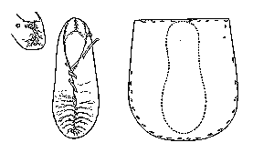

This center seam/lace type of shoe is made generally of a single piece of hide and sewn with a lace of hide 6-7 mm wide. The vamp should have some wrinkles as it is shaped to the foot. It is very similar to shoes found in early Scotland, as well as smoke tanned "hudarskogvar" and "Skaegver" found in the Faeroes.
This design is based on a description found in Lucas and Hald.
Footwear of the Middle Ages - Historical Shoe Designs/Number 55, by I. Marc
Carlson. Copyright 1996, 1998
This page is given for the free exchange of information, provided the Author's Name is
included in all future revisions, and no money change hands, other than as expressed in
the Copyright Page.